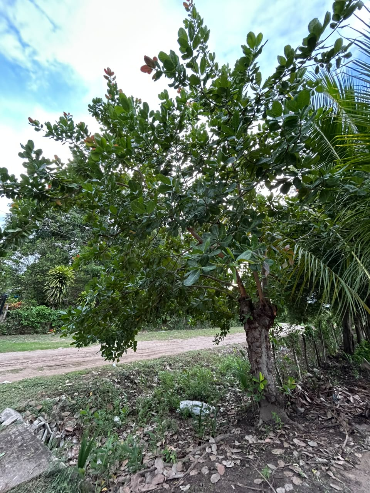
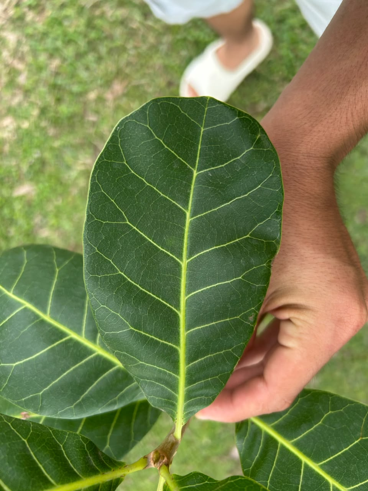
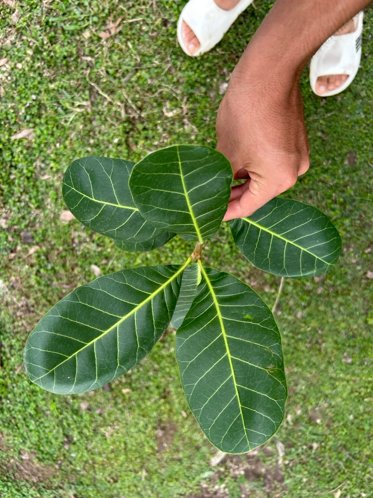
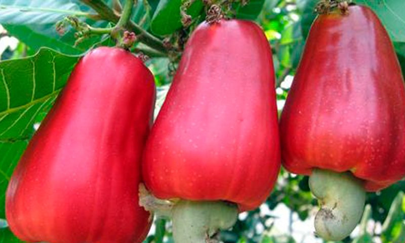

Marañon

📸 Galería del Marañon




Nombre científico
Azadirachta indica
Familia
Meliaceae
Descripción
Es un árbol frutal que crece principalmente en climas tropicales y cálidos. Puede alcanzar varios metros de altura y tiene un tronco ramificado. Sus hojas son simples, grandes, de forma ovalada, con la punta redondeada y los bordes lisos. Son gruesas, de textura lisa y color verde, aunque cuando son jóvenes pueden presentar tonos rojizos. Su fruto es conocido por la nuez de marañón y por la parte carnosa de color amarillo o rojo que la sostiene.
Usos
El marañón se utiliza principalmente para la alimentación. Su nuez se consume tostada y se emplea en la preparación de diversos alimentos, mientras que su parte carnosa se utiliza para elaborar jugos, dulces, mermeladas y bebidas. El árbol también se planta para proporcionar sombra y sus frutos tienen importancia económica para las comunidades que lo cultivan. Es importante recordar que la cáscara de la nuez contiene sustancias irritantes, por lo que no debe manipularse ni consumirse sin el procesamiento adecuado.
📍 Lugar donde fue encontrada
Municipio de Mazatán, Chiapas.